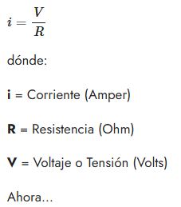
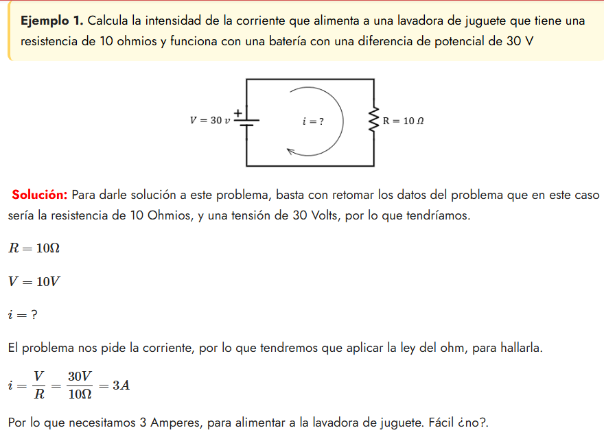
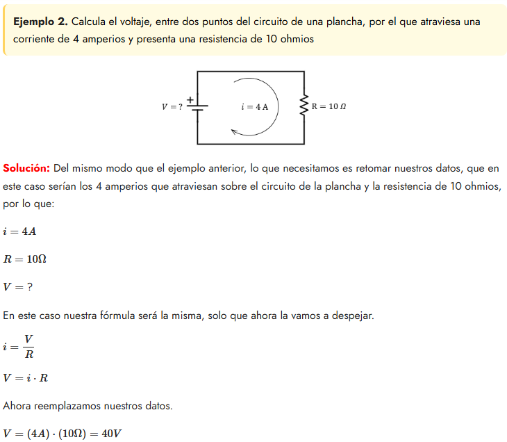
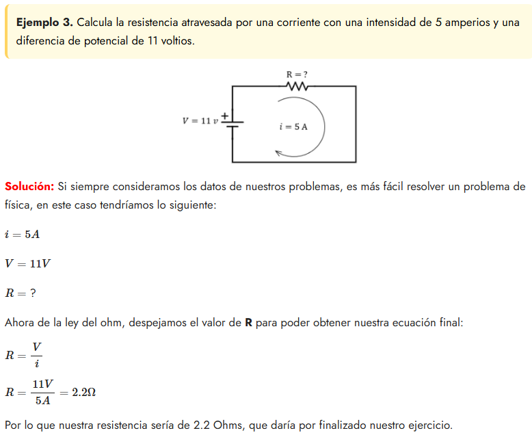

Ejercicios resueltos
Objetivo de aprendizaje: Identificar cómo resolver problemas prácticos mediante la resolución de ecuaciones que integra tanto la Ley de Ohm como las Leyes de Kirchhoff, para el análisis de circuitos.
- La ley del Ohm: Pasemos a resolver algunos ejercicios de la ley del Ohm, no sin antes recordar que nuestra Ley, la podemos definir con la siguiente fórmula:



Por lo que tendríamos 40 Volts como respuesta, que serían los que atraviesan entres los dos puntos de la plancha.
- Antes de seguir avanzando con un problemas más, hay algo importante que mencionar: la corriente es un flujo de electrones que viaja de un punto a otro, así que mientras más resistencia tenga un material, menor será la cantidad de corriente que pase sobre éste, tal como se ve en la imagen representativa de este post.

(Julián, 2022)